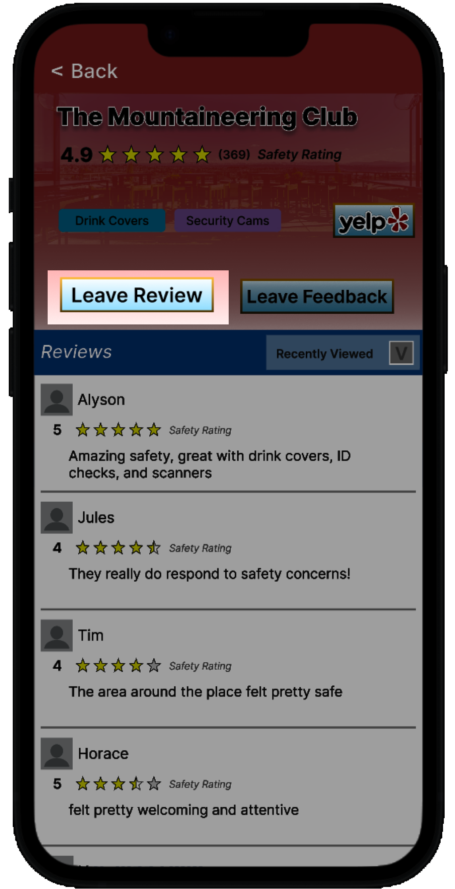
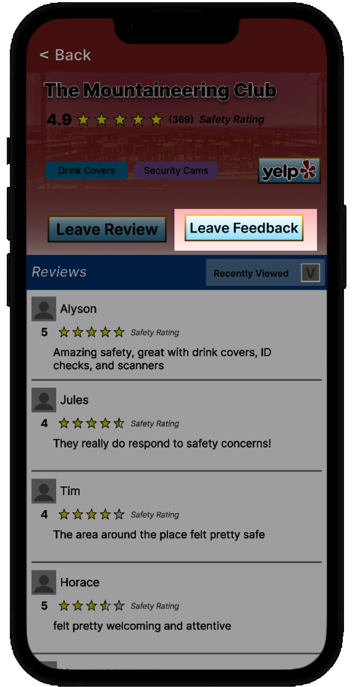
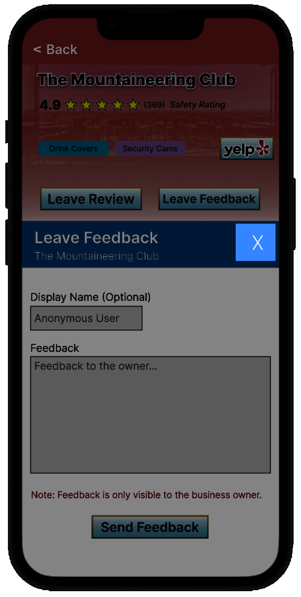

Project Name
Your Tagline Here.

KNIGHTS at NIGHT: A Safer Nightlife Experience
Written by Khai-Huy Nguyen, Maya Quinanola, Anusha Gani, and Henry SheProblem and Design Overview
Going to a club, bar, or nightlife venue can be really fun and exciting, and is very common among college students. But what about when things go wrong? Things can get really dangerous at night, so what can you do to help protect yourself and your friends?To address this issue, our team designed KNIGHTS at NIGHT, an app that helps users find a safe place to have fun at night while being able to leave safety reviews for other nightlife goers and feedback for bars, clubs, and venues.
Inside Passage Bar in Capitol Hill
Design Research Process
The goals of our research are to accomplish the following:- Understand where current designs/systems fail to protect people going out at night
- Assess where people find credible safety information about nightlife places
- Get deeper insights into the most serious safety issues when going out at night
Our research consisted of interviews with patrons and owners of nightlife establishments. We conducted interviews either in person or over Zoom and interviews were anonymized. Participants included were in the age range of 20-24 years old, were college educated and mostly had a fair amount of experience in the nightlife scene.
We chose these methods because nightlife experiences are very personal in nature, so voice-to-voice interviews were crucial to both handle these stories with sensitivity and be able to ask deeper questions that reveal important insights into the issue of nightlife safety. Similarly, we chose these participants because the primary demographic of people going out at night is typically college-aged young adults.
Three Key Insights of Design Research
Safety Isn’t Limited to Just the Nightlife Place ItselfThe safety around the area of the establishment is very important because the most dangerous incidents happen where nightlife security/cameras cannot see. This insight emerged as we interviewed Grace in particular, who shared a horrible experience with us:
“She was trying to move away from the fight when the man that was kicked out came up from behind her and began choking her with his forearm around her neck, unable to scream or move. As the fight was going on security was unable to see this happening because they were fixated on breaking the men up . . . After she went to security, they said there was nothing they could do about it because they did not have cameras outside the bar.”
- Grace
Credible Safety Information is Actually Hard to Find
When it comes to safety information about nightlife places, Yelp and Google are unreliable, Reddit and Instagram are somewhat reliable, and information from friends and word of mouth is by far the most reliable. This insight emerged as we found out that unanimously, all of our research participants agree that the only credible source is information from friends and word of mouth:
“Q: Where do you get information about how safe establishments are?
A: [primarily] friends, google review but also they can be incentivized so be skeptical of reviews, reddit, trusting the general consensus”
- Flo
Who You’re With Influences How Safe You Feel
People feel safer in nightlife locations with a group of friends, or generally people of similar age, same gender, good lighting, and not too much seclusion or too much crowding. This insight emerged as we interviewed Heidi, who explained what made her feel safe when going out at night:
“Q: What makes you feel safe or comfortable in the nightlife scenery?
A: probably atmosphere of club or bar where going when similar age and females and area as well”
- Heidi
Iterative Design Process
Our design focuses on two main tasks:- Find credible and reliable information regarding the safety of nightlife places
- Work directly with nightlife businesses to help improve the safety of patrons
- Created a paper prototype with a basic outline of our two tasks
- Recreated and edited the paper prototype according to:
- Nielsen’s 10 Usability Heuristics by our own inspection
- Usability Testing with research participants and classmates
- Created an interactive digital prototype with Figma (huge kudos to Henry!)
Our First Paper Prototype
Key Insights of Iterative Design Process
Serious Issues with Efficiency and DocumentationAfter doing heuristic evaluations using all 10 of Nielsen’s Heuristics, our team realized that our design completely lacked documentation to help the user use our design and shortcuts to speed up interaction. This insight emerged when our team observed our design and thought about heuristics 7 (Flexibility and Efficiency) and 10 (Help and Documentation).
To address efficiency issues, we added a home screen feature where users can tap a recommended place on the map to go straight into that place’s business profile to leave a review or feedback. In addition, we added a feature where users can view a list of recently-viewed places from the home screen using the dropdown by the search bar.
To address documentation issues, we added a button to access help via the information icon (top right corner). This links to our website with step-by-step instructions on our main tasks: how to leave a review, and how to search for safety info about a business.
before revisionafter revision
Small Details Can Make a Huge Difference, such as Making Comments Optional
While conducting usability testing, one of our research participants, Alice, expressed a negative incident regarding leaving a review; she felt overwhelmed and uncomfortable being required to leave a comment when writing a review. Her main concern was that through text/grammatical analysis of her comment, her comments could be traced back to her and she might lose her anonymity.
As it turns out, a detail as small as making comments optional can make a substantial difference in how safe our users feel.
To resolve this issue, we made writing comments in reviews optional by having “comment (optional)...” as the instructional text for the text box. This makes it clear that comments are optional and help users feel more comfortable leaving reviews.
before revisionafter revision
Colors Can Have Significant Meaning
In creating our digital prototype, our team thought about our color palette and realized that most screens of our design have a top and bottom component. The original prototype used the same color for these parts, which made them confusing to distinguish.
To address this issue, we decided to have a “main color” for the top component and an “accent color” for the bottom, which helped make functionality (such as scrolling through reviews) more clear since the contrasting colors signify differing components.
before revisionafter revision
Final Resulting Design
Home Page (above)
Results Page (above)
Business Summary Page (above)
Review Page (above)
Feedback Page (above)
About the Overview
This image shows our Home Page where users can start their journey into the two tasks we have outlined. The feed at the bottom of the page shows credible anecdotes of various bars and nightlife places and is scrollable to show more anecdotes as needed. Additionally, the search bar allows users to search up neighborhoods to find a safe bar (Results Page) but also allows them to search up specific bars by name so they can find credible safety information (Business Summary Page) and also interact with business owners and management to improve safety (Review/Feedback Page).
How to Find Credible Safety Information (anecdotes or safety features)
To find credible safety information, here are the steps needed:-
Open the app to view the Home Screen
-
Type in the name or location of the nightlife place on the search bar.
-
Filter the results by safety features or ordering using the filter results icon:

-
Tap the nightlife place you are interested in researching in the Search Results section

-
View the business summary at the top to see safety features at the business & see the Yelp Page for more information

-
Scroll through the Reviews section to view credible anecdotes
-
If you have an anecdote or review you’d like to share to help others find credible safety information
-
click on the ‘Leave Review’ button:
 -
rate the safety out of 5 stars, optionally write your review in the text box, and select privacy settings
-
(error path) If needed, click on text box to edit text again
-
(error path) to go back to previous page, click the X button
-
hit “Leave Review:

-
click on the ‘Leave Review’ button:
How to Work Directly with Nightlife Businesses to Help Improve the Safety of Patrons
To work directly with nightlife businesses to help improve the safety of patrons, here are the steps needed:-
Open the app to view the Home Screen

-
Type in the name or location of the nightlife place on the search bar.

-
Tap the nightlife place you are interested in leaving feedback for in the Search Results section
-
On the bar page, click on the ‘Leave Feedback’ button
-
Type the feedback to improve safety for the particular business in the text box. Optionally leave your name, or leave it blank to be anonymous.
 -
(error path) If needed, click on text box to edit feedback or name again
-
(error path) If needed, click the X button to go back to previous page
 -
Click on the “Send Feedback button”